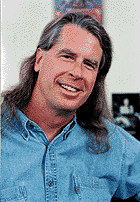

FAQ: BEING-IN-NOW by Mark Katzman
|
 Micheal Gosney |
Gosney is the founder of Verbum, a multimedia publisher (Multimedia Power Tools, The Official Photo CD Handbook, among others). Verbum 1.0: The Journal of Personal Computer Aesthetics, a blend of cutting-edge digital art, interviews and practical "how to" was first produced by Gosney in a La Mesa, Calif., garage in 1986. In 1990, it became Verbum Interactive, the first truly integrated multimedia publication on CD-ROM, which served as a catalyst for the inner circle of the industry. Today, Verbum Interactive Journal is a visionary forum in the making.
Verbum even attracted the attention of the late Timothy Leary, who called Gosney "one of the few great pioneer humanists in the digital world."
Verbum and the Be-In aren't about celebrating "technology for technology's sake," says Gosney. "What really matters, versus all the hype and all the toys, is how we can use these things to enrich our lives, to expand consciousness, to create art."
IU caught up with Gosney at Verbum's office in San Francisco's Multimedia Gulch and at the nearby Brain Wash Café.
INTERNET UNDERGROUND: HOW DID THE DIGITAL BE-IN FIRST EVOLVE?
Michael Gosney: It evolved directly from the original Verbum parties, where we had a bunch of digital artists getting together in a hotel suite and showing off artwork on their Macintoshes. We decided to have a little bigger party the third year and we called it the Digital Art Be-In, in a kind of tongue-in-cheek notion, observing the connection between the '60s and the personal computer, along with the particularly cool applications that it spawned. The people that were involved in developing the advanced tools, both hackers and artists, seemed to have some real counter- cultural roots.
IU: A THREAD RUNS BETWEEN THE '60S COUNTER-CULTURE AND THE CREATIVE COMPUTER CULTURE?
MG: Yeah. There's a lot to this subject, of course. There are parallels in the development and use of new media. In the '60s it was the underground newspapers and the recording industry and the underground radio stations. In the '90s, with desktop publishing, we've got the first phase of the digital media revolution, which went on to multimedia and now the Internet. But this evolution needs careful articulation, and I'm hoping we can do that in a multimedia book.
IU: HOW DID THE THEME FOR THIS YEAR'S NINTH BE-IN, CULTURAL DIVERSITY IN CYBERSPACE, COME ABOUT?
MG: There's a tendency for a myopic view that's typical of the cults of new technologies. The original cult--the techno-cult of Internet development--has been very much Silicon Valley white. We need diversity--the whole idea of cyberspace reflecting the world and creating new levels of interaction among people and groups. The theme followed the social cause of last year's Be-In--freedom of speech on the Internet. It also signifies a gathering of the generational tribes, bringing together the '60s counter-culture, the '80s cyber-culture and the millennial rave-culture, and exploring the common threads in those three spheres.
IU: WHERE WAS THE VENUE THIS YEAR?
MG: The SOMAR Gallery. It's a multicultural arts center here in San Francisco.
IU: YOU HAD A LIVE NETCAST?
MG: Our netcast took two forms: the on-the-fly photo-journalism and the live, video program that broadcast streaming video to the Be-In site using Graham Technology Solutions (www.graham.com). We had a professional video crew and a director. It was a five-hour live event. It included interviews with our visionaries, roving cameras as well as fixed cameras on the stages. We put original writing and original photography up on the Web site while the evening was unfolding. It presents a fascinating constraint that many of the participants find exhilarating--to have to deliver on the spot. Some of the reportage is quite poetic, some more "factual" in a traditional, journalistic sense. Live reportage on the Internet is going to become more popular as people become hip to it. The whole idea of netcasting--this is in an early stage and has some very exciting potentials. We've begun an archive on the Be-In site. We have a lot of material. It's pretty interesting to see how the events grew over the last nine years.
IU: WHO WERE THE ATTENDING VISIONARIES THIS YEAR?
MG: Willie Brown, the mayor of San Francisco, made a great presentation about his enthusiasm for the original Human Be-In, when he lived in Haight-Ashbury. He went on and on about the importance of this Be-In and talked about cultural diversity and San Francisco being the appropriate source and inspiration for cultural diversity in cyberspace. Malcolm CasSalle spoke. He's a 26-year-old techno-visionary and the co-founder of Net Noir, the African culture channel. We had John Gilmore of the Electric Frontier Foundation; Dennis Parone, who runs the Cannabis Buyers' Club; and Delores Huerta, the United Farm Workers' spokesperson. We had technical, social and spiritual visionaries this year. The spiritual visionaries were Allen Cohen and Chet Helms, connections to the Human Be-In, celebrating its 30th anniversary; Larry Harvey, the organizer of the Burning Man project; and Matthew Fox, who has just opened his creation/spirituality school. He introduced the "Seminar" that started at midnight, which was actually a rave. It was produced by several of the really great underground rave circles in San Francisco.
IU: ARE RAVES A KIND OF TRIBAL ECSTASY?
MG: The rave is a tribal, ritualistic kind of experience. It's definitely reminiscent of the Be-In. You know, the whole acid test kind of thing. It's that same pattern, that same tendency that we have to seek ecstasy, in ourselves and with each other. It's a reinvention of that celebratory kind of environment that each generation tends to create.
IU: WHAT WAS THE ALTAR ROOM?
MG: The Altar Room was a kind of spin-off of the connection with the rave culture. It brought together the works of several different "altar artists." It's the first time that all of these altar artists, mostly women--we call them Altar Goddesses--have all worked together in one place. They've all done altars for their respective rave.
IU: CAN THIS WORK BE SEEN ON THE SITE?
MG: Yes. There's an area called the Virtual Altar Room. It has QuickTime VR shots of the Altar Room. It's quite beautiful.
IU: AND THE AVATAR TELEPORT?
MG: Whereas our overriding theme this year was cultural diversity in cyberspace and the anniversary of the original Be-In, the technical theme complementing them was avatars and virtual worlds. The Avatar Teleport was created both as a physical space at the event and as a section on the Web site. If you were at the event, you could walk up to a terminal, don an avatar and go into a virtual world. Or you can tune into the Web site and do the same thing. So there were people in Black Sun worlds, Alpha Worlds--the Teleport brought together the leading developers of virtual-world technology. Those were the two provocative, new features at the Be-In this year that we're going to continue developing for the 10th anniversary Be-In next January.
IU: WHAT ARE SOME OF THE BE-IN HIGHLIGHTS FOR YOU?
MG: Well, the 40-minute jam-ecstatic-drum-dancing ritual at the sixth Be-In was probably one of the high points. We've got that on a nicely edited video tape. I think Tim Leary talking at the fifth, sixth and seventh Be-Ins were great moments.
IU: YOU GOT TO KNOW LEARY PRETTY WELL, DIDN'T YOU?
MG: I got to know Tim through the Be-In and ended up knowing him very well, actually, in his later years. He was always a great proponent of the original Human Be-In and helped us make the connection with our '90s Be-Ins. He was the connection, in many ways, because of the visionaries of the '60s and the consciousness movement back then, he really was the only one that emerged in the early '80s as a proponent of computers and the cyberspace paradigm.
IU: WHAT EXACTLY IS THE BE-IN CONCEPT?
MG: I think ecstatic awareness is what the Be-In is celebrating. An awareness of self, an awareness of life and light. Upward, evolving potentiality.
IU: WHERE IS THE INTERNET TAKING US?
MG: To each other [laughs]. I'm very excited about the multilingual, communicative efforts that are being made in both travel and cultural studies and cultural exchange. I think it's truly going to break through a lot of the educational barriers that have kept our various cultures from not really knowing each other.
IU: WHAT WAS IT LIKE BEING A GUEST-IN-THE-FLESH ON THOMAS DOLBY'S HYPRACTV8 AREA ON AOL ?
MG: That was the first time I've really been on the spot like that, being in a chat-room with people asking me questions. It was pretty neat. What I particularly liked was when a couple of younger kids kind of bounced in, saying, "Hey, what's going on?" and "What age and sex are you?" and this and that, right in the middle of our thoughtful discussion about the Be-In. Then, after listening to what we were saying, one girl goes, "It really feels good in here." [laughs] Just the idea of being in cyberspace, a collective space where you're typing letters to each other is fascinating in its primitive qualities. But I see it getting into a much more advanced form, with visual accompaniment and sound and the ability to carry on a private conversation and also be in a room with people. It's going to be interesting to see where it goes in the coming years. Certainly the idea of having an avatar and being in a room and looking at other avatars and moving away or toward them and talking to them or away from them--that whole immersive, 3-D chat environment, 3-D world is what everybody's working on now and thinking about. There are several competing standards for avatars and dynamics of those kind of spaces. It'll be fascinating to see it unfold.
IU: WOULD YOU CARE TO TAKE A PEEK OVER THE MILLENNIUM POINT--WHERE ARE THE TRIBES HEADING?
MG: We're going to have a heavy youthful movement coming about over the next three or four years. There's going to be some pretty hardcore protest about conservatism and the fear and ignorance shackling our societies. Into the new millennium, there's going to be a collective, "We're not going to take this anymore!" We know what we're doing and we're moving forward in the digital and chemical frontiers of life and consciousness here on this planet. The new economic order that the Information Age is spawning is going to be very closely tied to the vision of the young minds taking shape now. It's going to be undeniable, just as the personal computer was undeniable to the Communist regimes of a few years ago.
|
|